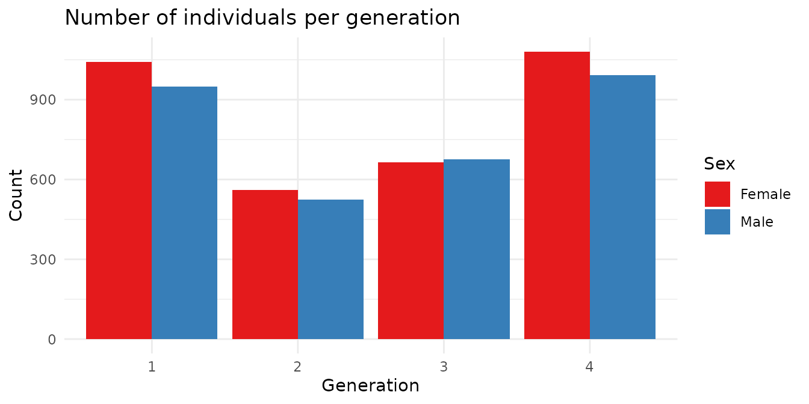
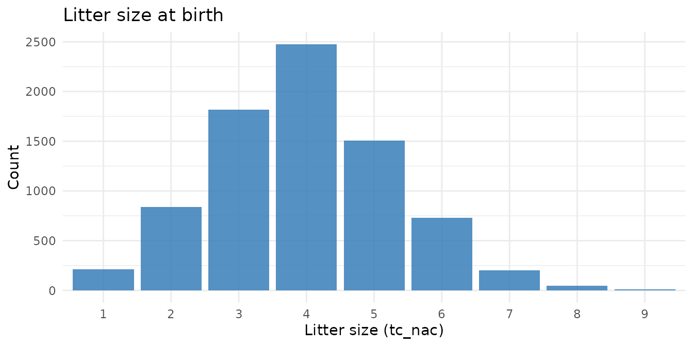
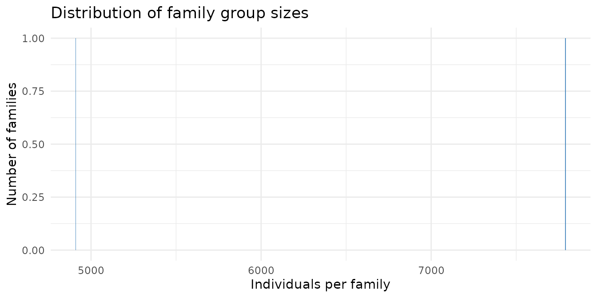
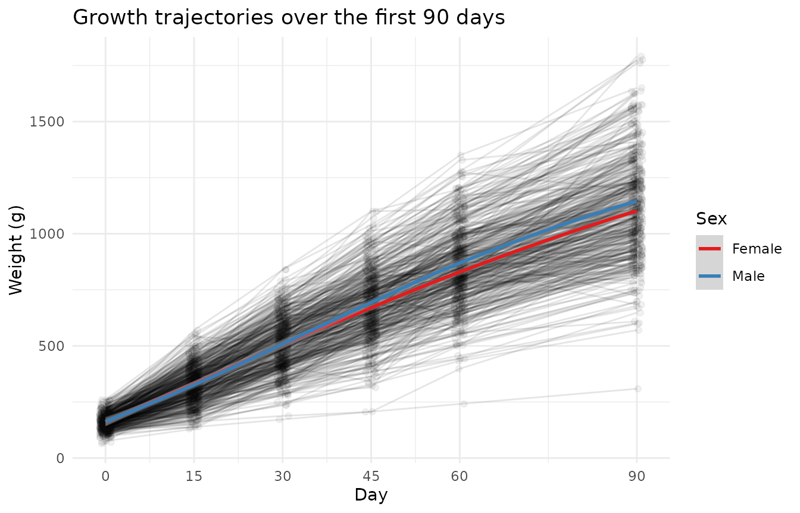
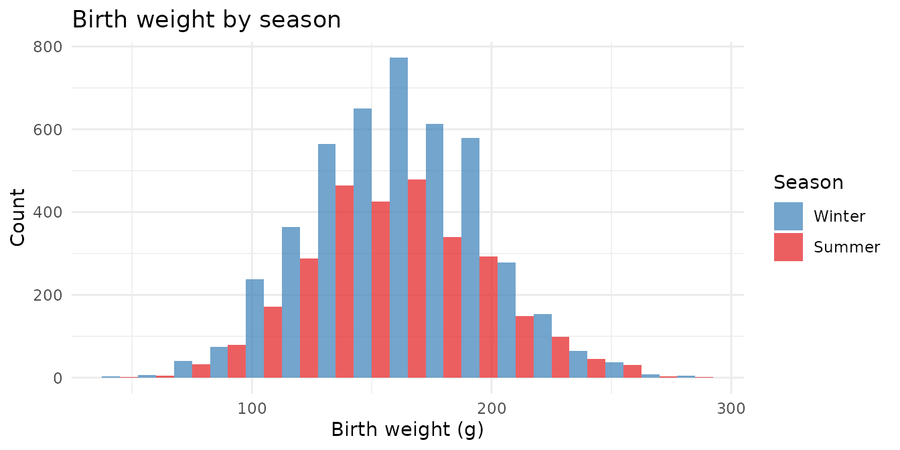
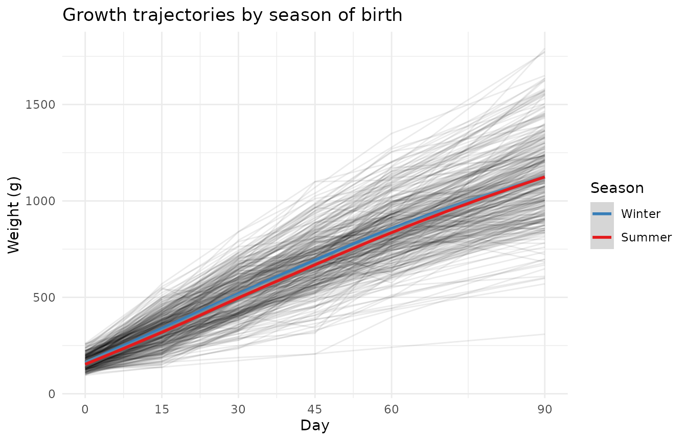
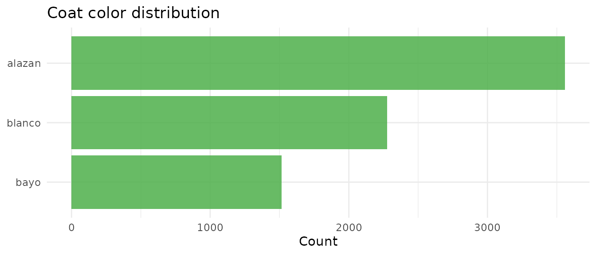

The guinea_pigs dataset records pedigree and body weight
measurements from a four-generation controlled breeding program of
domestic guinea pigs (Cavia porcellus). Guinea pigs — known as
cuy in Andean countries — are an important livestock species in
South America. This dataset captures 12703 individuals, each with up to
six body weight measurements (days 0, 15, 30, 45, 60, and 90), along
with pedigree links, litter information, coat color, season of birth,
and housing pen.
Before exploring the data, we validate the pedigree structure using
BGmisc.
checkSex() standardizes sex coding and flags
inconsistencies; checkParentIDs() identifies individuals
listed as parents who have no row of their own (adding phantom
placeholders where needed); checkPedigreeNetwork() confirms
the pedigree is acyclic — no individual can be their own ancestor.
gp <- checkSex(guinea_pigs,
code_male = "M",
code_female = "H",
verbose = TRUE,
repair = TRUE
)
#> Role: dadID
#> 3 unique sex codes found: M, NA, H
#> Modal sex code: M
#> 107 parents have inconsistent sex coding.
#> Role: momID
#> 3 unique sex codes found: H, NA, M
#> Modal sex code: H
#> 660 parents have inconsistent sex coding.
#> Changes Made:
gp <- checkParentIDs(gp,
addphantoms = FALSE,
repair = TRUE,
parentswithoutrow = FALSE,
repairsex = FALSE
)
#> REPAIR IN EARLY ALPHA
net <- checkPedigreeNetwork(gp,
personID = "ID",
momID = "momID",
dadID = "dadID",
verbose = TRUE
)
cat("Pedigree is acyclic:", net$is_acyclic, "\n")
#> Pedigree is acyclic: TRUEWith the pedigree confirmed acyclic, we assign family group IDs using
ped2fam(). Family groups are the connected components of
the pedigree graph — sets of individuals linked by at least one
parent-offspring relationship.
gp <- ped2fam(gp, personID = "ID", famID = "fam.ID")
cat("Number of family groups:", n_distinct(gp$fam.ID), "\n")
#> Number of family groups: 2
cat("Individuals: ", nrow(guinea_pigs), "\n")
#> Individuals: 12703
cat(
"Founders: ",
sum(is.na(guinea_pigs$dadID) & is.na(guinea_pigs$momID)), "\n"
)
#> Founders: 276
cat(
"With both parents: ",
sum(!is.na(guinea_pigs$dadID) & !is.na(guinea_pigs$momID)), "\n"
)
#> With both parents: 12427
cat("Generations: ", paste(sort(unique(guinea_pigs$gener)), collapse = ", "), "\n")
#> Generations: 1, 2, 3, 4Most individuals have both parents recorded — this is a controlled breeding study, not a wild population, so pedigree completeness is high.
The breeding program ran for four generations. Each generation was larger than the last as the population expanded.
guinea_pigs |>
filter(!is.na(gener), !is.na(sex)) |>
count(gener, sex) |>
ggplot(aes(x = factor(gener), y = n, fill = sex)) +
geom_col(position = "dodge") +
scale_fill_brewer(
palette = "Set1",
labels = c("H" = "Female", "M" = "Male")
) +
labs(
title = "Number of individuals per generation",
x = "Generation", y = "Count", fill = "Sex"
) +
theme_minimal()
Guinea pigs are polytocous — they give birth to litters. Litter size
at birth (tc_nac) and at weaning (tc_destete)
reflect both reproductive output and early-life survival.
guinea_pigs |>
filter(!is.na(tc_nac)) |>
count(tc_nac) |>
ggplot(aes(x = factor(tc_nac), y = n)) +
geom_col(fill = "#377EB8", alpha = 0.85) +
labs(
title = "Litter size at birth",
x = "Litter size (tc_nac)", y = "Count"
) +
theme_minimal()
guinea_pigs |>
filter(!is.na(tc_nac), !is.na(tc_destete)) |>
mutate(survived = tc_destete / tc_nac) |>
summarise(
mean_born = round(mean(tc_nac), 2),
mean_weaned = round(mean(tc_destete), 2),
prop_surv = round(mean(survived), 3)
)
#> mean_born mean_weaned prop_surv
#> 1 3.96 3.07 0.798On average, most offspring that are born survive to weaning — consistent with the controlled conditions of a breeding program.
guinea_pigs |>
count(famID) |>
ggplot(aes(x = n)) +
geom_histogram(binwidth = 5, fill = "#377EB8", alpha = 0.85) +
labs(
title = "Distribution of family group sizes",
x = "Individuals per family", y = "Number of families"
) +
theme_minimal()
library(ggpedigree)
fam_summary <- guinea_pigs |>
filter(!is.na(momID) | !is.na(dadID)) |>
count(famID) |>
# filter(n >= 15, n <= 40) |>
arrange(desc(n))
focal_fam <- guinea_pigs |> filter(famID == fam_summary$famID[2]) %>%
filter(gener < 3| is.na(gener)) %>%
# remove duplicate
group_by(ID) %>%
slice(1) %>%
ungroup() %>%
checkSex(
code_male = "M",
code_female = "H",
verbose = TRUE,
repair = TRUE
)
ggPedigree(focal_fam,
personID = "ID",
momID = "momID",
dadID = "dadID",
config = list(
add_phantoms = TRUE,
code_male = "M",
code_female = "H"
)
)Body weight was recorded at six time points across the first 90 days of life. Weights increase rapidly in the first 30 days, then plateau.
growth_long <- guinea_pigs |>
filter(!is.na(p0)) |>
select(ID, sex, p0, p15, p30, p45, p60, p90) |>
pivot_longer(
cols = starts_with("p"),
names_to = "day",
values_to = "weight"
) |>
mutate(day = as.numeric(stringr::str_remove(day, "p")))
set.seed(42)
sample_ids <- sample(unique(growth_long$ID), 500)
ggplot(
growth_long |> filter(ID %in% sample_ids),
aes(x = day, y = weight, group = ID)
) +
geom_line(alpha = 0.1) +
geom_jitter(alpha = 0.05, width = 1, height = 0) +
geom_smooth(
method = "loess", se = TRUE,
aes(group = sex, color = sex)
) +
scale_x_continuous(breaks = c(0, 15, 30, 45, 60, 90)) +
scale_color_brewer(
palette = "Set1",
labels = c("H" = "Female", "M" = "Male"),
na.value = "grey50"
) +
labs(
title = "Growth trajectories over the first 90 days",
x = "Day",
y = "Weight (g)",
color = "Sex"
) +
theme_minimal()
Male and female growth curves diverge after day 30, with males reaching higher weights by day 90. This sex difference is a consistent feature of guinea pig growth and should be included as a covariate in any analysis.
guinea_pigs |>
filter(!is.na(p90), !is.na(sex)) |>
group_by(Sex = sex) |>
summarise(
n = n(),
mean = round(mean(p90), 1),
sd = round(sd(p90), 1),
min = min(p90),
max = max(p90)
)
#> # A tibble: 2 × 6
#> Sex n mean sd min max
#> <chr> <int> <dbl> <dbl> <dbl> <dbl>
#> 1 H 3189 1084. 208. 330 1897
#> 2 M 2928 1145. 249. 152 1800The dataset records whether each animal was born in winter (invierno) or summer (verano). Season of birth may influence early resource availability, dam condition, and growth.
guinea_pigs |>
filter(!is.na(p0), !is.na(clima)) |>
ggplot(aes(x = p0, fill = clima)) +
geom_histogram(binwidth = 15, alpha = 0.7, position = "dodge") +
scale_fill_manual(
values = c("invierno" = "#377EB8", "verano" = "#E41A1C"),
labels = c("invierno" = "Winter", "verano" = "Summer")
) +
labs(
title = "Birth weight by season",
x = "Birth weight (g)", y = "Count", fill = "Season"
) +
theme_minimal()
guinea_pigs |>
filter(!is.na(p0), !is.na(clima)) |>
group_by(Season = clima) |>
summarise(
n = n(),
mean_birthwt = round(mean(p0, na.rm = TRUE), 1),
mean_p90 = round(mean(p90, na.rm = TRUE), 1)
)
#> # A tibble: 2 × 4
#> Season n mean_birthwt mean_p90
#> <chr> <int> <dbl> <dbl>
#> 1 invierno 4454 163. 1104.
#> 2 verano 2910 158. 1128.Does the season of birth shape how animals grow across the full 90 days, or is the effect limited to birth weight?
growth_season <- guinea_pigs |>
filter(!is.na(p0), !is.na(clima)) |>
select(ID, clima, p0, p15, p30, p45, p60, p90) |>
pivot_longer(
cols = starts_with("p"),
names_to = "day",
values_to = "weight"
) |>
mutate(day = as.numeric(stringr::str_remove(day, "p")))
set.seed(42)
sample_ids2 <- sample(unique(growth_season$ID), 400)
ggplot(
growth_season |> filter(ID %in% sample_ids2),
aes(x = day, y = weight, group = ID)
) +
geom_line(alpha = 0.08) +
geom_smooth(
method = "loess", se = TRUE,
aes(group = clima, color = clima)
) +
scale_x_continuous(breaks = c(0, 15, 30, 45, 60, 90)) +
scale_color_manual(
values = c("invierno" = "#377EB8", "verano" = "#E41A1C"),
labels = c("invierno" = "Winter", "verano" = "Summer")
) +
labs(
title = "Growth trajectories by season of birth",
x = "Day",
y = "Weight (g)",
color = "Season"
) +
theme_minimal()
guinea_pigs |>
filter(!is.na(color), color != "", color != "na") |>
count(color, sort = TRUE) |>
ggplot(aes(x = reorder(color, n), y = n)) +
geom_col(fill = "#4DAF4A", alpha = 0.85) +
coord_flip() +
labs(
title = "Coat color distribution",
x = NULL, y = "Count"
) +
theme_minimal()
Not all individuals were weighed at every time point — attrition increases at later ages.
weight_cols <- c("p0", "p15", "p30", "p45", "p60", "p90")
sapply(guinea_pigs[weight_cols], function(x) {
paste0(sum(!is.na(x)), " (", round(mean(!is.na(x)) * 100, 1), "%)")
}) |>
setNames(paste0("Day ", c(0, 15, 30, 45, 60, 90)))
#> Day 0 Day 15 Day 30 Day 45 Day 60
#> "7364 (58%)" "6488 (51.1%)" "6320 (49.8%)" "6243 (49.1%)" "6196 (48.8%)"
#> Day 90
#> "6119 (48.2%)"